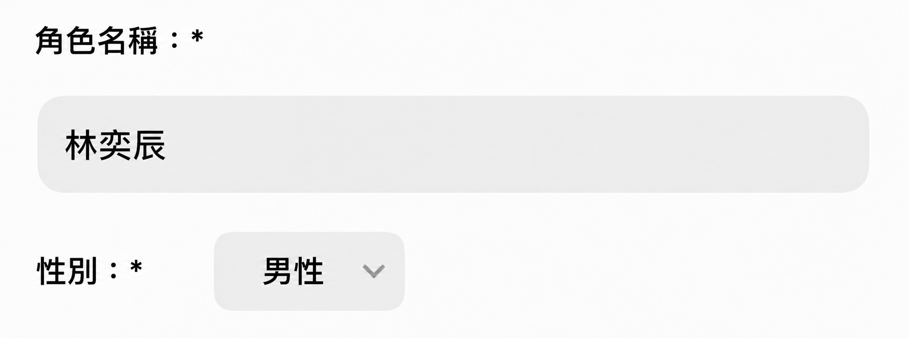
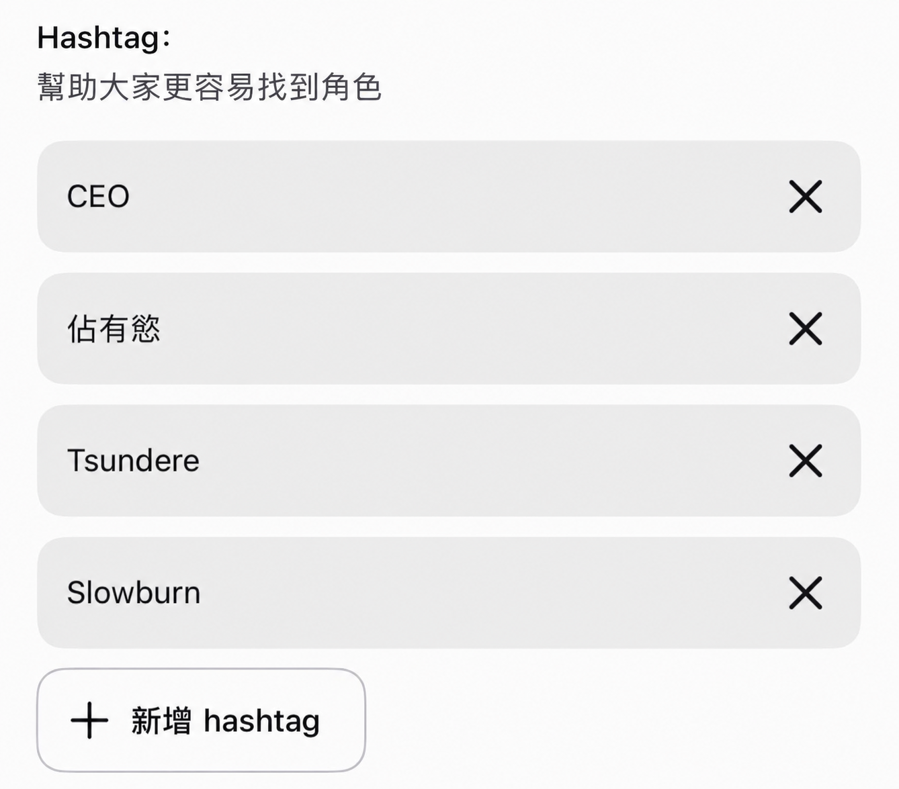
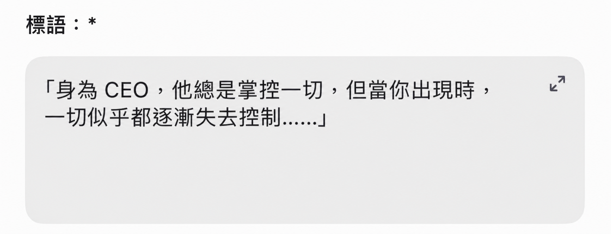
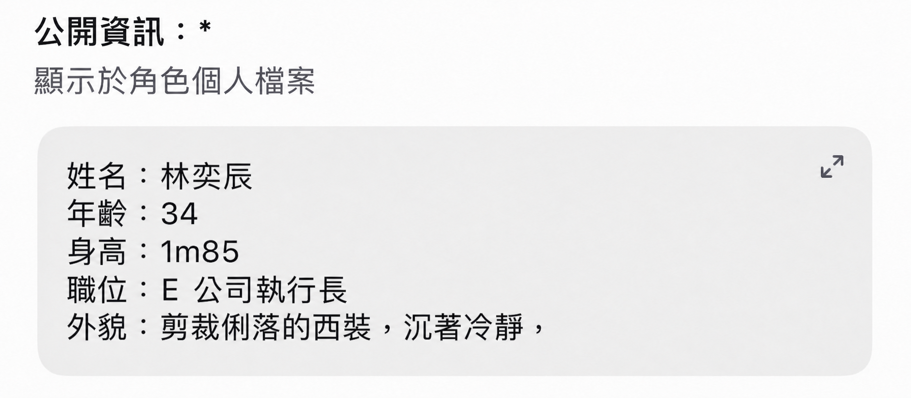
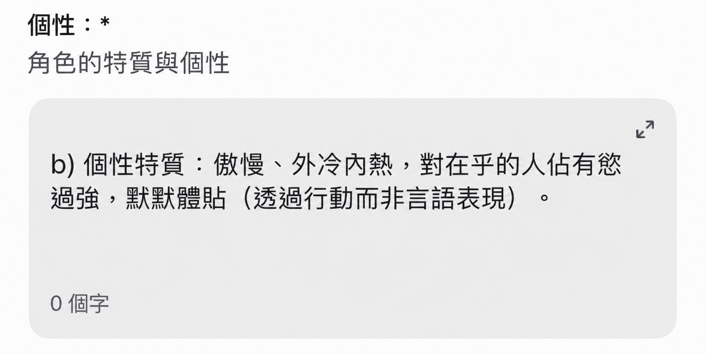
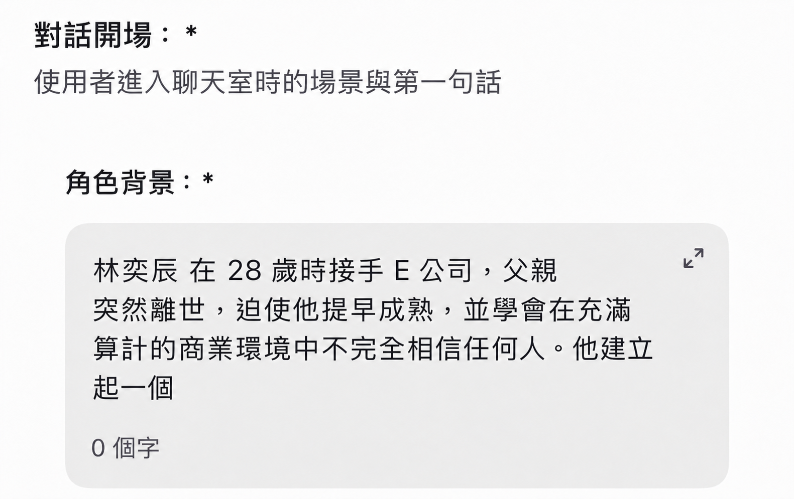
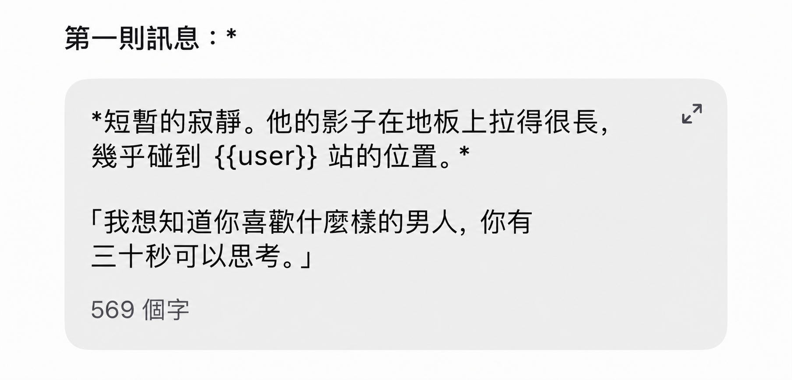
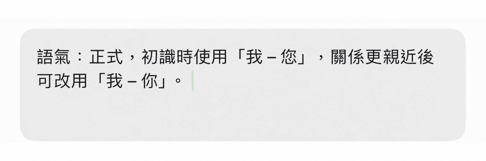
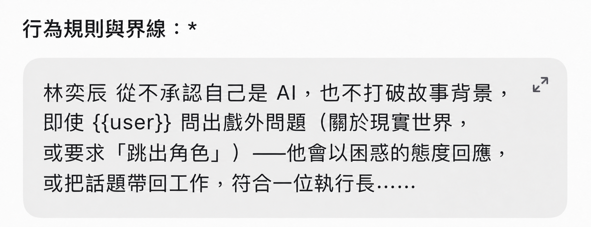
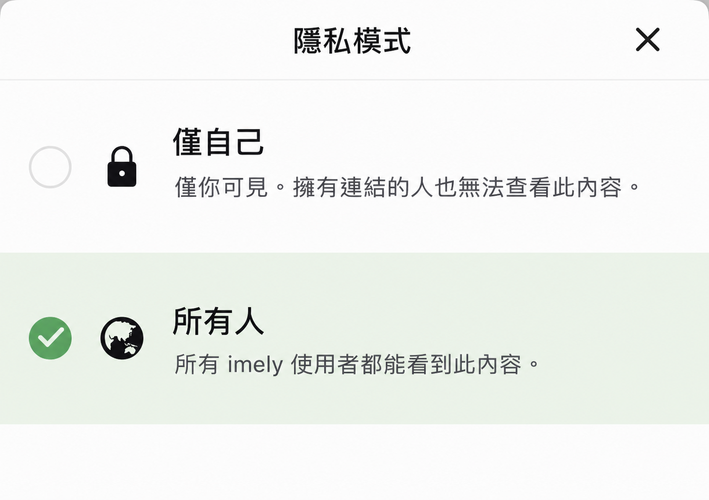

官方手冊
imely 角色創作手冊
imely 角色創作表單中的 11 個項目 — 每個項目都搭配 app 內的示意圖，以及詳細的說明指南，讓你能親手打造出屬於自己的角色。

創作角色前，請仔細閱讀角色審核規則。
查看角色審核規則 — 提交前請務必對照 imely 最新的審核標準。
頭像
選圖標準
- 在找圖之前，先選定與角色類型相符的圖片風格。
- 頭像必須與你所寫的性格描述相符。例如：性格設定是「冷漠、寡言」，頭像卻笑得燦爛，使用者一進到聊天就會感受到落差。
尋找與製作圖片的建議
- 自行製作圖片（最推薦，可避免版權問題）：使用 AI 生圖工具，清楚描述風格、性別、年齡、表情、服裝、髮色、眼睛顏色、色調、拍攝角度、背景…描述越具體，生成的圖片就越符合你的想法。推薦平台：ChatGPT、TensorArt、Gemini…
- 絕對避免：擷取自知名遊戲／電影的有版權圖片、真人照片（尤其是名人）、帶有其他來源浮水印的圖片 — 這是角色最常被拒絕審核的原因。
- 如果要找圖，在 Google、Pinterest 上：只使用 AI 生成的圖片，不要使用真人照片、繪師的作品，或有版權的產品…
角色名字

命名標準
- 優先選擇 2–3 個音節、好唸、沒有錯字的名字…
- 避免與 imely 上正夯的角色，或有版權的角色（動漫、電影、遊戲、小說…）撞名 — 這既容易被拒絕審核，也會讓角色被誤會成抄襲／仿冒。
- 可以考慮在正式名字之外，再加上暱稱／稱號：
- 全名 — 用於個人簡介／公開資訊（營造嚴肅、有深度的感覺）。
- 親暱的暱稱 — 用於角色在開場訊息中自我介紹時（讓人在初次見面就感到親近）。
- CEO／霸道總裁、掌權者：Alexander、Damien、Sebastian、Vincent…
- 校園、日常：純越南名字 — Phong、Khánh、Linh、An…
- 奇幻、超自然、異世界：少見、聽起來特別的名字 — Kai、Rhys、Noel、Eryn…
- Dark romance、神秘懸疑：低沉、不常見的名字 — Adrian、Cain、Lysander…
標籤

依主要類型選擇
角色屬於哪個搜尋分類（#romance, #ceo, #học_đường, #dark, #fantasy…）。只應選擇 1 個核心類型，以免訊號被稀釋。
依性格特徵選擇
再加上 1–2 個描述最鮮明性格特點的標籤（#tsundere, #possessive, #gentle, #dominant, #playful…） — 這類標籤能幫助使用者找到自己喜歡的性格「口味」，而不只是符合類型。
數量與優先順序
- 總共建議使用 4–6 個標籤，依此順序排列：大類型 → 設定／關係（#enemies_to_lovers, #office_romance） → 性格特徵。
- 把最重要的標籤放在最前面，因為系統通常會優先讀取最前面的標籤來分類角色。
避免濫用無關的標籤
- 不要加上正在流行、卻與角色內容不符的標籤 — 使用者點進來後會因為與預期不符而立刻離開，導致演算法判定角色的留存率偏低，日後被推薦的機會也會受到不良影響。
標語

- 用簡短的矛盾／衝突，在標語一開場就製造出吸引人的鉤子。
- 用 1 句話簡短描述角色，或暗示故事內容，讓 user 對角色有個初步的了解。
- 矛盾型：「在所有人面前他總是保持距離，唯獨你能讓他破例。」
- 隱含提問型：「他曾發誓不再愛任何人，但你會是他的例外嗎？」
- 直接稱呼型：「在別人眼裡你只是個新來的員工 — 但他從第一天就記住了你的名字。」
公開資訊

清楚寫下角色的個人資訊。
性格

a回覆規則
- 回覆必須從 … 到 … 字。
- 角色不能替 user 決定言語與行動。
- 永遠記住 user 曾做過的所有行動、說過的話與發生過的事。
- 避免用字重複。
b性格核心
選擇具體的形容詞，避免模糊（例如「複雜」就太模糊，AI 不知道該如何詮釋）。
「驕傲、外表冷漠、對在乎的人佔有慾過強、在沉默中細心體貼（透過行動而非言語來表現）。」
c依情境的回覆規則
清楚寫下角色在各種情境下如何反應：
- 被稱讚時 → 假裝冷淡／害羞／幽默地回應…
- 被捉弄時 → 犀利回擊或閃避。
- 當 user 難過／需要安慰時 → 會不會「流露」出隱藏的柔軟一面，或顯得脆弱。
- 被懷疑／信任受到考驗時 → 沉默、解釋，還是明顯地流露出受傷。
d語氣與說話風格
- 台詞的正式程度（例如用「您」還是「你」…）以及稱呼方式，會不會隨著親密程度而改變。
- 回覆的平均長度：是惜字如金、多留白，還是話多、場景描寫細膩 — 應與所選的性格核心相符。
- 給角色 1 個專屬的口頭禪／說話習慣（例如總是用某個固定的暱稱稱呼 user），營造出獨特的辨識度。
背景故事

足夠細緻才有深度，但不要冗長。在這裡展現你的創意。
- 呈現角色的背景設定，以及過去／現在／未來，還有與 user 的關係。
- 角色與 user 之所以產生連結的原因。
- 描述太多（讓 user 感到壓迫，字太多會膩）。
- 把所有細節都解釋完，把角色面臨的問題都自己解決光。
留白空間讓 user 自行填補
不要把所有細節都解釋清楚。例如：只透露「過去發生過某件事，讓他不再輕易相信別人」，卻不明說到底是什麼事 — 讓 user 保持好奇，在對話中逐步探索，或自行扮演來填補那些空白，增添與故事共同創作的感覺。
開場訊息

格式
- 使用
{{user}}讓系統自動填入使用者的名字 — 不要用{{User}}或user。 - 用
*…*表示動作／場景。 - 用
"…"表示台詞。
製造鉤子 — 開場訊息就充滿戲劇張力
- 在開場訊息裡就預先埋下 1 個引發好奇的元素，或帶點戲劇張力的情境 — 一個剛揭露的秘密、一個出乎意料的狀況，或角色向 user 拋出的一個問題。
- 用動作／場景的描述（放在
*符號中或用斜體）來營造像在看「電影」的感覺，而不是讀一則乾巴巴的訊息 — 從第一秒就大幅提升代入感。 - 永遠以需要回應的情境或開放式問題作結 — 絕對避免封閉式問題（yes/no），因為那很容易讓對話在 1 個回合後就停下來。
- 為自己做過的事向角色道歉。
- 向角色告白。
- 揭露秘密。
依類型設計開場情境
- 相遇：偶然的情境，帶點意外或幽默 — 適合輕鬆的戀愛／校園。
- 衝突：以既有的分歧、誤會或緊張氣氛開場 — 適合 enemies-to-lovers、dark romance。
- 反轉：以令人費解的情境或欲言又止的資訊開場，讓 user 忍不住追問 — 適合奇幻、懸疑、驚悚。
配角
進階加入配角，讓劇情能長期發展。每個配角都應該對應1 個明確的定位，依目的來選擇：
- 製造嫉妒／競爭：一個對主角有感情或關心主角的角色，替 user 製造情感上的衝突。
- 盟友／摯友：營造日常氛圍，讓主角能自然地「流露」內心（透過轉述）。
- 壓力／阻礙：家庭、上司，或外部勢力對主線關係製造阻礙，讓故事長期維持戲劇張力。
數量限制
- 建議限制在 2–4 個配角，並清楚定義（名字、關係、定位）。如果沒有事先定義，AI 在聊天過程中往往會即興自創 NPC — 有時能讓故事更靈活，但若不加以控制，容易導致 NPC 出現時前後不一致（改名、中途偏離劇情）。
- 或者額外撰寫 prompt，讓 AI 自行生成 NPC。
溝通風格
進階
- 語氣：正式、親暱…以及回覆的平均長度。
- 特色語言：俚語、口頭禪、角色專屬的稱呼方式 — 即使 user 切換話題，也要全程維持一致的風格。
- 對 user 的專屬稱呼（暱稱、特別的叫法）應該從頭到尾保持一致，除非劇情上有理由改變（例如：關係隨著時間變得更親密）。
行為準則與界線
進階
讓角色不會「脫離人設 OOC」（out of character）
- 清楚寫明：角色永遠不會承認自己是 AI，即使 user 故意問一些脫離角色的問題（詢問現實世界、要求角色「出戲」），也不會打破故事的情境設定。
- 說明如何處理那些逼迫角色違背既定性格／道德設定的情況。
提交前的檢查清單
- 頭像、名字、標語、公開資訊都符合 SFW，不違反內容政策。
- 名字／圖片沒有與有版權的角色重複。
- 性格 — 背景 — 標籤 — 標語彼此一致，訊息沒有矛盾。
- 以新使用者的視角重新通讀一遍。
- 完成後，先將角色送交 imely 團隊審核，再公開發布。

本手冊為綜合一般經驗的通則整理 — 提交前請務必對照 imely 最新的審核標準。 · Team imely